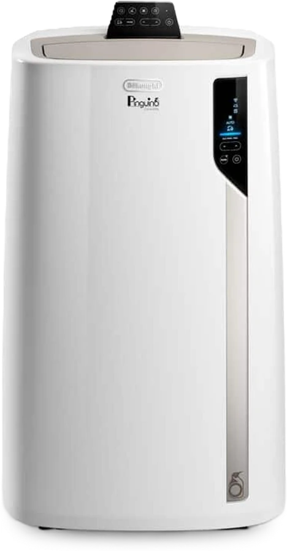
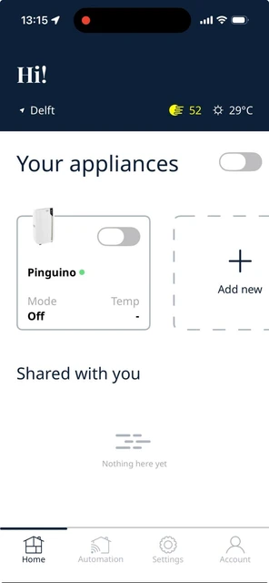
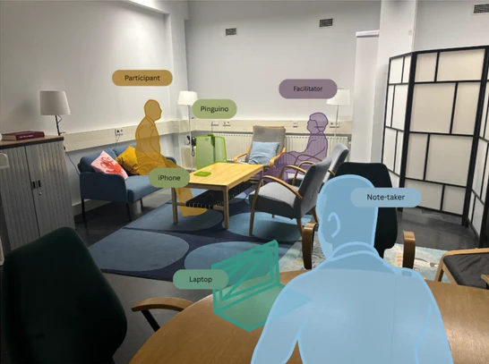
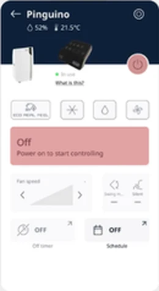
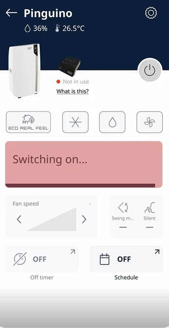
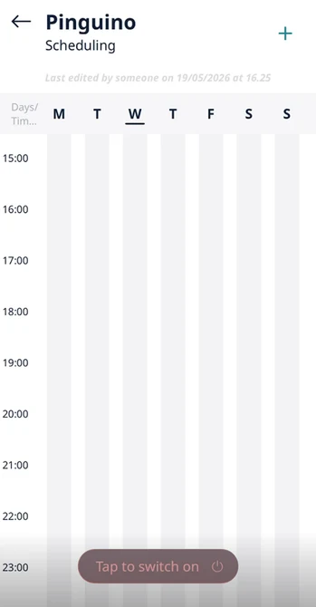
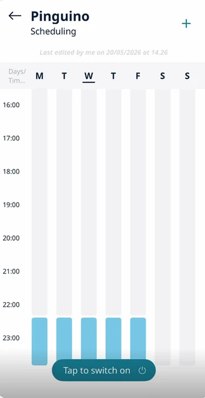
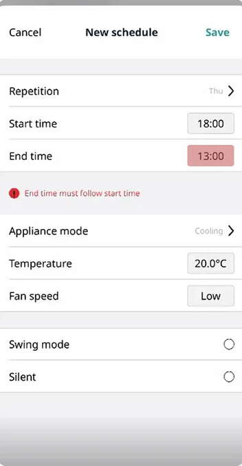
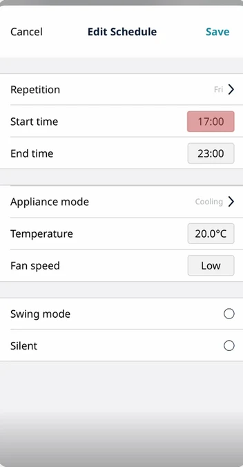
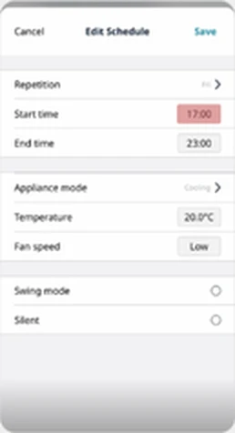

Cool,not clear.
Usability research for De'Longhi on the Pinguino Care4Me portable air conditioner and its Comfort app, focused on weekly scheduling. People could cool a room easily. Changing a schedule was where the app lost them.
- My role
- UX researcher: recruitment, facilitation, UEQ analysis, coding
- Client
- De'Longhi, via TU Delft
- Team
- With Daan Robben, Emma van Heek, Paweł Wykowski and Arda Yener
- Product
- Pinguino Care4Me PAC EX130 + De'Longhi Comfort app

Summary
Assess the usability of the Comfort app, especially weekly scheduling.
7 participants, 6 tasks in a living-room lab, then the UEQ and an interview.
Basic control worked. Editing a schedule dropped to 57% completion, and 0% for experienced users.
Functional but under-polished: people got there, at a high cognitive cost.
What I did
5 contributionsRecruitment screener
Designed the pre-test survey that sorted participants by smart-home experience, the basis of the group comparison.
StudyFacilitation & transcription
Facilitated three user tests, guiding participants through six tasks and the interview, and transcribed the sessions.
StudyUEQ analysis
Processed and interpreted the UEQ: scale means, market baseline, the pragmatic vs hedonic split, and the result slides.
UEQData matrix & coding
Built the first task comparison matrix (completion, time, confidence) and did in-vivo coding of three sessions for the thematic analysis.
FindingsLimitations & context
Wrote the study limitations and ran a competitor scan of Midea, Honeywell and Duux apps as an industry reference.
Reflection
Task-based usability testingThink-aloudUEQSemi-structured interviewsThematic analysisIn-vivo codingFriction mappingExcel
Comfort depends on understanding the system.
The Pinguino is often bought on impulse on a hot summer day. Its app promises more than cooling: schedules, rooms and energy-aware modes. That only works if people can use it without a learning curve.
De'Longhi asked for an assessment of the Comfort app's usability and UI, with particular interest in the weekly scheduling and room functions. We scoped the study to climate-control tasks and scheduling.
Before testing anyone, we set the product up ourselves. Pairing took us three days, including a hidden step: hold the mode button for 20 seconds. In the app, the “Tap to switch on” button on the schedule screen didn't say whether it controlled the device or the schedule.

- Our own first try
- The experience starts before the app: setup was the hardest part.
- Advanced features like scheduling looked like the biggest usability risk.
- Comfort depends on how well people understand the system.
- System feedback was often unclear, in the app and on the device.
How do usability factors of the De'Longhi Comfort app influence the user's ability to perform climate-control tasks on the Pinguino Care4Me PAC EX130?
- SQ1
How intuitive is the app for people with no smart-home experience, compared with people who have it?
- SQ2
How usable is weekly scheduling, and what do people run into when creating, changing and managing schedules?
Six tasks, building up to changing a schedule.
A summative, mixed-method usability test in the living-room lab at TU Delft IDE. Each session took about an hour, with one facilitator and one note-taker.
Participants used a provided iPhone with the app already paired, so the study could focus on scheduling. After each task they rated difficulty and confidence. At the end they filled in the UEQ on paper and answered ten interview questions.
A screener split participants into people who own and use smart-home products (3) and people who don't (4). All were TU Delft students.

The six tasks
Same order for everyone- 1Turn on the Pinguino
Cool the room to 22 °C, low fan.
- 2First schedule
Be cool at 24 °C when you get home at 18:00.
- 3Night-time schedule
Quiet fan 22:30–00:00 on weekdays.
- 4Repeating schedule
20 °C before 18:00, Monday to Friday.
- 5Change one day
Tomorrow only, start at 19:00 instead.
- 6Pause for a holiday
Wednesday to Sunday off, keep the rest.
Making a schedule was fine. Changing one wasn't.
Tasks 1–4 were completed almost perfectly. Tasks 5 and 6, editing and pausing a schedule, had the lowest completion, the lowest confidence and the most “harder than expected”.
Completion used a weighted score: 1.00 done independently, 0.75 with a prompt, 0.50 done incorrectly, 0 not done. With seven people, all numbers are read descriptively.
Per task
n = 7Confidence followed the same line: 5.6–6.3 out of 7 for tasks 1–4, then 4.9 for task 6 and 3.6 for task 5.
Experience worked against people
Experienced (3) vs inexperienced (4)Confidence 1.7 / 7. Their habits from other calendar and smart-home apps didn't carry over.
Confidence 5.0 / 7. Without those habits, they explored the app until it worked.
Experienced participants also rated tasks 1, 2, 5 and 6 as harder than expected more often (67%). The interface looks conventional, so they brought conventional expectations, and the app didn't honour them.
Where exactly people got stuck.
We mapped the expected flow of every task, then placed each friction point from the transcripts on it, with the participants affected and what they said.
Most friction clustered on the scheduling screens. One of them turned out to be a bug: editing a schedule bar added a new bar instead of changing the old one.

Task 1 · P2A big “Off” that isn't the button
The large “Off” label looked like the toggle. The real power button was a smaller, separate element.
The power button is smaller than the first button I was looking at.

Task 1 · P1, P7A loading bar with no meaning
After changing the temperature, a bar loaded and disappeared. Nobody knew if the action had registered.
I've just slid it and now there's a loading bar. I do not know what that means.

Task 2 · P1, P2, P3, P6“Tap to switch on” switched it off
People pressed it expecting to start scheduling. It turned the air conditioner off instead.
I thought the scheduler is maybe popping up, but the whole thing was shutting down.

Task 3 · P1A schedule silently replaced
Saving the night-time schedule removed the one from task 2. No warning, no conflict dialogue.
It just disappeared. Maybe it would ask me to remove it.

Task 4 · P3End time doesn't follow start time
Every new schedule needed the end time set by hand, an extra step people didn't expect.
Why doesn't it have any automatically end time?

Task 5 · P1, P3, P5, P7The edit that never saved
Editing a start time and saving left the calendar unchanged. The only way was to delete and recreate. We traced it to a bug.
I thought I've changed the start time, but it has not changed.

Task 6 · P1, P3, P6, P7No way to pause several days
People tried to deselect Wednesday to Sunday. Nothing changed. Single-day delete was found by accident.
It's a little bit complicated than adding a schedule.
Usable enough. Not engaging at all.
The UEQ split the experience in two. Task-related qualities came close to the market baseline. How the app felt was flat or negative.
Six scales from −3 to +3. Pragmatic quality averages perspicuity, efficiency and dependability; hedonic quality averages stimulation and novelty. The market baseline sits around +0.8.
Does it get the job done? Close to, but below, the baseline. The core flow works, without fatal obstacles.
Is it pleasant to use? Stimulation near zero, novelty clearly negative.
Six UEQ scales
Mean · n = 7 · dashed line = market baseline +0.8- AttractivenessOverall+0.79
- PerspicuityPragmatic+0.43
- EfficiencyPragmatic+0.75
- DependabilityPragmatic+0.79
- StimulationHedonic+0.14
- NoveltyHedonic−1.04
−30+3
Attractiveness, efficiency and dependability all sat just under the +0.8 baseline. Perspicuity stayed in the neutral zone. Novelty was the only scale in the negative zone: people saw the app as conventional, even a little outdated next to other smart-home apps.
In participants' own ratings
Item-level highlightsStrongest positives
Strongest negatives
It looked familiar, so people expected it to behave that way.
Inductive in-vivo coding of the transcripts gave five themes. Together they explain why the app was usable but cost so much effort.
Visual clarity was mostly tied to the home page. Expectation mismatch was mostly tied to scheduling.
- Theme 1
Visual clarity and understanding
Clear schedule bars, icons and indicators helped people understand and feel confident.
It shows on the calendar that it's quite clear that it only repeats on weekdays.P7
- Theme 2
Discoverability challenges
An overloaded interface and hidden functions made key features hard to find.
Me not being able to figure out the scheduling immediately is annoying… it should be a very basic use case.P2
- Theme 3
Expectation–system mismatch
People expected it to work like other calendar apps, and met limited editing and fixed controls.
I see tap to switch on, so I try. Oh, it's turning off.P6
- Theme 4
System feedback uncertainty
Unclear or missing status left people unsure whether their action had applied.
The bar loaded and disappeared, instead of giving me some feedback.P4
- Theme 5
Perceived value
Willingness to keep using it depended on usefulness, convenience and personal routine.
It's just not that useful, but it's just because my own schedule issues.P3
How the factors add up
Answer to the research question- 1Expectation mismatch
A familiar-looking interface that doesn't behave like one.
- 2Low discoverability
People explore instead of recognising. Time and learning effort go up.
- 3Feedback uncertainty
Unclear confirmation leads to trial and error, and lower trust.
- =Higher cognitive cost
Tasks still get done, but first-time use isn't intuitive.
From trial and error to recognition.
The app is operational but lacks interaction polish. Closing that gap is where UX investment pays off most.
Our recommendations to De'Longhi, in order of urgency.
- 01
Fix the scheduling bugs
Editing must change the existing block, not add a new one. Move “Tap to switch on/off” so it no longer covers late-night schedule blocks, and make blocks visibly tappable.
- 02
Revise the information architecture
Relabel the home card's on/off status and loading bar, redesign or remove “Tap to switch on”, clarify Active/Standby and label the “+” button.
- 03
Confirm every action
Immediate, consistent feedback that a change has registered, plus short explanations of how the Pinguino behaves, such as how long cooling takes.
- 04
Follow calendar conventions
Separate timer from schedule, add a way to pause a schedule, and allow bulk delete, in line with the scheduling apps people already know.
- 05
Guide first use
An onboarding that introduces the Pinguino, the app's purpose and its key features, so advanced functions don't depend on exploration.
Be honest about what your method can show.
The hardest part wasn't running the tests. It was shaping the research question, and being clear about what our data could and couldn't say.
We started with the experienced-vs-inexperienced comparison as the main question. Our tutor pushed us to widen the lens, so it became a sub-question under a broader question about usability factors. That change shaped everything after it, from tasks to recommendations.
Facilitating the pilot, I was so focused on guiding that I missed hesitations and small recoveries I only saw in the recording. It changed how I thought about observation, and showed the value of a note-taker who focuses on non-verbal behaviour.
Reading the results in context
Limitations- Seven students
Below the UEQ's recommended n ≥ 20, and younger and more tech-literate than De'Longhi's 35–50 target group. The results show a trend, read descriptively.
- Setup left out
We pre-paired the device because pairing took us three days. That kept the focus on scheduling, but likely underestimates the real usability burden.
- Lab, one phone, fixed order
A living-room lab, a provided iPhone for everyone and no counterbalancing may have shifted how later tasks felt.
Good research isn't about following the perfect method. It's about being open at every step about what the method can and cannot reveal.